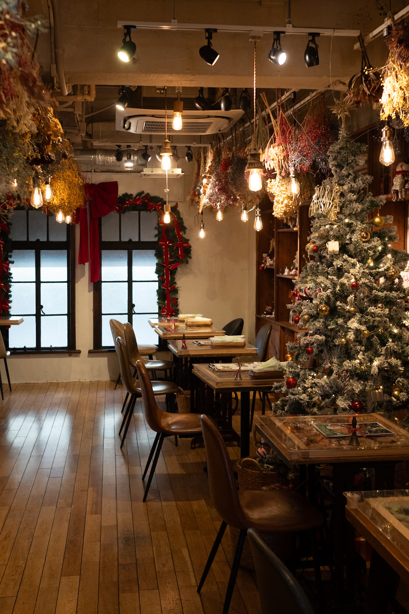
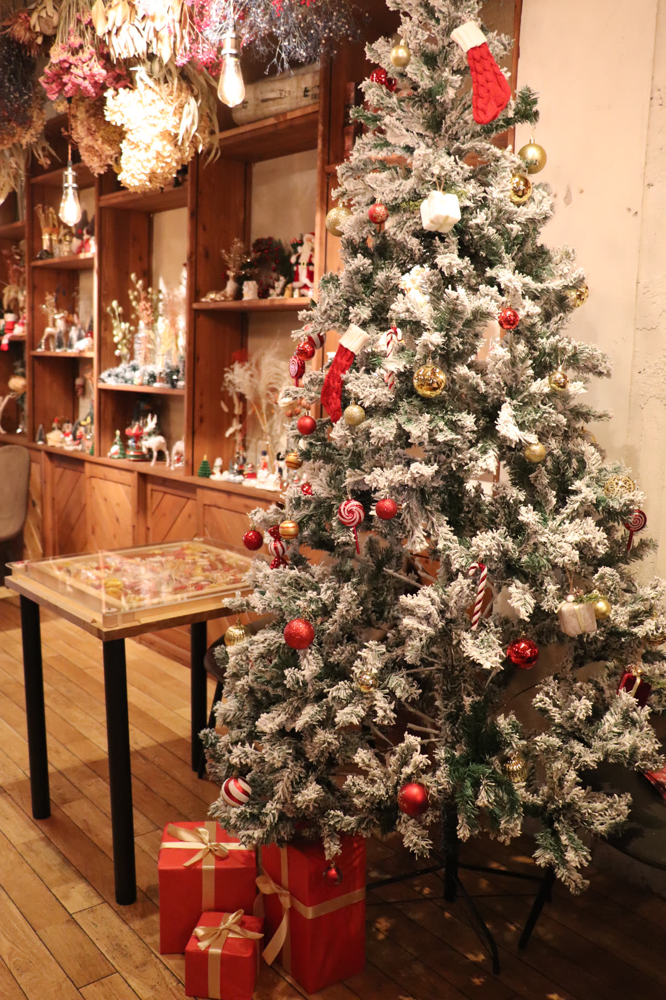
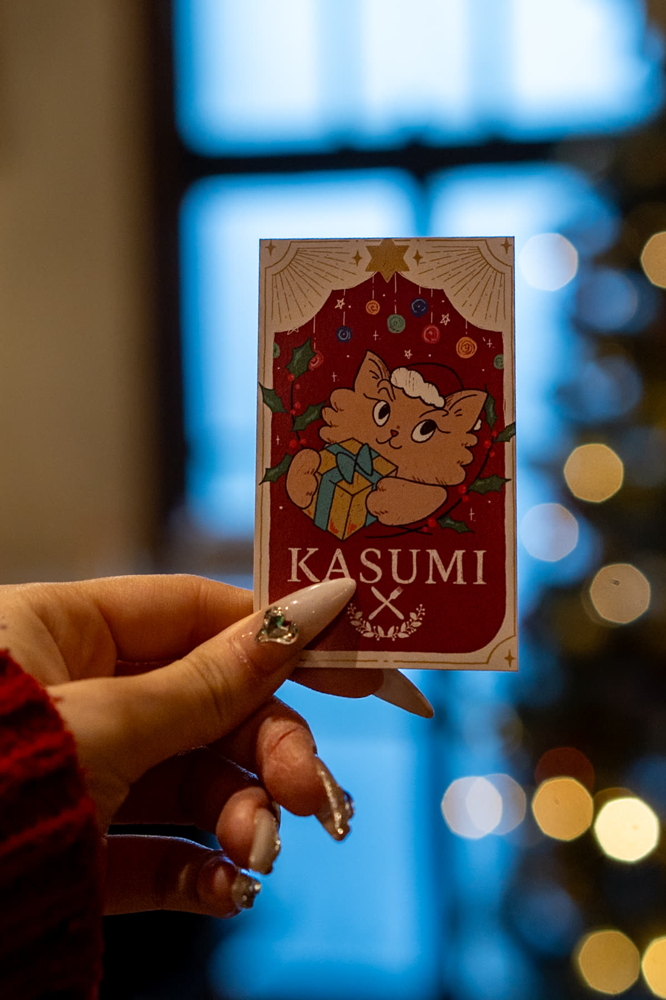
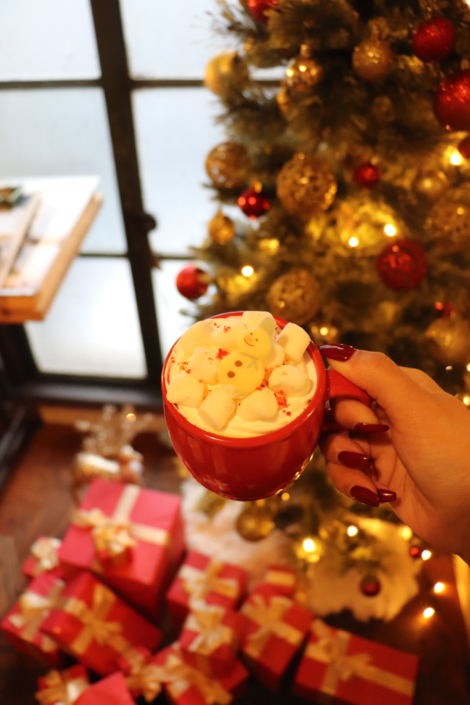
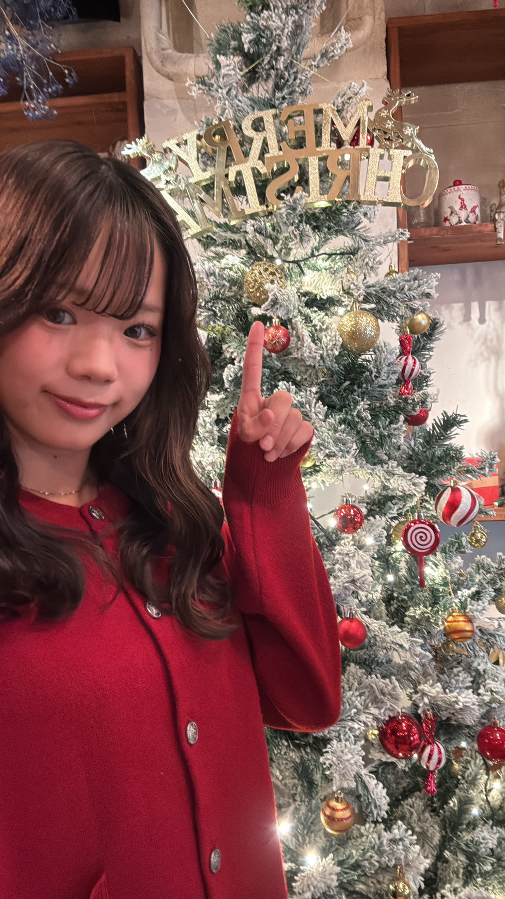

Christmas Cafe
今年も、KASUMIは
クリスマスカフェを開催します。
店内を、クリスマスの飾りでいっぱいにして、
あたたかい飲み物とごちそうを用意しました。
階段の上で、お待ちしております。
2026.11.19 THU — 12.27 SUN
KASUMI KYOTO

ようこそ、KASUMIのクリスマスへ。
スクロールして封を開ける ↓
Kyoto / Shijo-Kawaramachi — Christmas Cafe
四条河原町から徒歩3分。天井いっぱいのドライフラワーに、雪のツリーとオーナメント。期間中は朝から夜まで、一日じゅうクリスマスカフェです。
クリスマスメニューを見る →
Concept
KASUMIは1階の専用入口から階段を上がった2階にあるお店です。この季節は、天井のドライフラワーに雪のツリーやガーランド、棚いっぱいのクリスマスの小物が加わります。



Last Christmas
Christmas
Memories
天井いっぱいのドライフラワーに、雪のツリー。
あたたかいマグと、クリスマスのプレート。
今年も、この景色の中でお待ちしています。
Dried flowers overhead, snowy trees and warm mugs — a glimpse of our Christmas cafe last winter. We look forward to welcoming you again this season.
※映像は2025年のものです。メニューの内容・価格は今年と異なります。
Hours
期間中も朝8:00から夜23:00まで。夜カフェはお休みして、閉店まで一日じゅうクリスマスカフェです。
ご予約は承っておりません。混み合う時間は、お待ちいただくことがあります。
Merry Christmasクリスマスのごちそうを、どうぞ。
Access